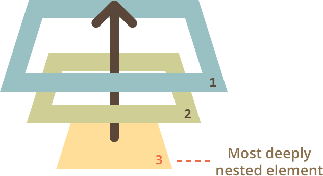

1. What is DOM and what is the purpose of DOM?
DOM is a Document Object Model & Programming Interface for HTML objects, properties, methods and events to get, set, change, add or delete HTML elements. DOM helps us to get the html object as like an array and we can access HTML objects as like an array.
2. How will you select HTML elements using DOM? Name the DOM methods.
We can select HTML elements by their tag name, class name, id name.
Such as :
3. What is event bubble?
Event Bubbling is a concept in the DOM. It happens when an element receives an event, and that event bubbles up (or you can say is transmitted or propagated) to its parent and ancestor elements in the DOM tree until it gets to the root element. We can stop bubble up using stopPropagation()
4. What is a callback function and why will you use it?
A callback function is a function that passed into another function as an argument.
function print(callback){
callback();
}
this function takes another function as a parameter and calls it inside and we call it a “callback”. So a function that is passed to another function as a parameter is a callback function.